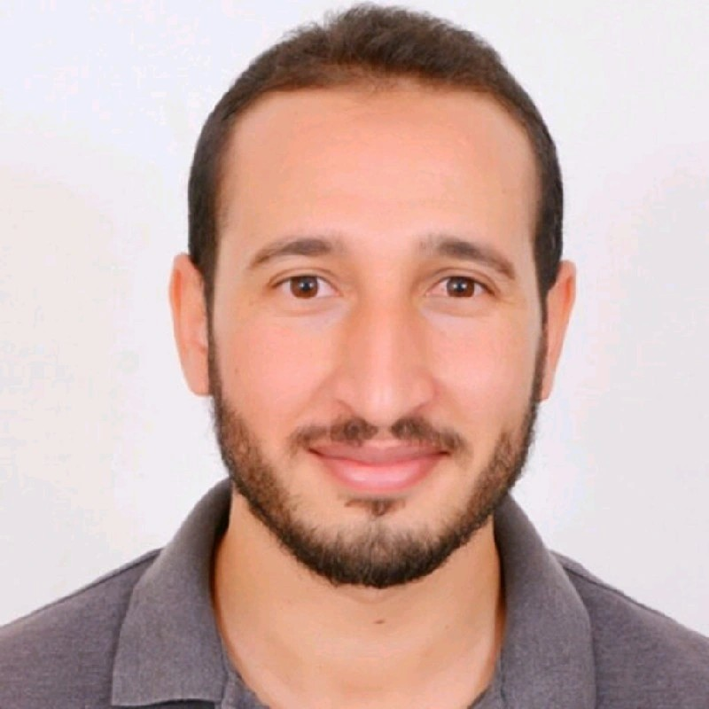

Équations aux dérivées partielles
EDP non linéaires, systèmes paraboliques, opérateurs fractionnaires, espaces à exposants variables et analyse de la bonne position des modèles.
Enseignement supérieur · Recherche
Docteur en mathématiques appliquées et informatique
Professeur agrégé de mathématiques
Mes travaux portent sur l'analyse des équations aux dérivées partielles non linéaires et fractionnaires, l'optimisation et le calcul scientifique, avec des applications à la restauration d'images et à la vision par ordinateur.

01 / Profil académique
Docteur de l'Université Cadi Ayyad (Faculté des sciences Semlalia, Marrakech), mes recherches se situent à l'interface de l'analyse mathématique, de la modélisation, de l'optimisation sous contraintes EDP et du traitement d'images.
02 / Activités scientifiques
Des méthodes d'analyse et de calcul numérique aux applications en traitement d'images et en intelligence artificielle.
EDP non linéaires, systèmes paraboliques, opérateurs fractionnaires, espaces à exposants variables et analyse de la bonne position des modèles.
Méthodes de volumes finis et d'éléments finis ; discrétisation, stabilité, convergence et simulation de systèmes évolutifs.
Optimisation sous contraintes EDP, problèmes de contrôle, analyse non lisse et modèles variationnels ou non variationnels.
Débruitage, préservation des structures, reconstruction, apprentissage profond, U-Net et vision par ordinateur.
Programmation et calcul : Python, MATLAB, C/C++, R, Maple, CPLEX. Rédaction scientifique : LaTeX. Langues : français, arabe, anglais et tamazight (langue maternelle).
03 / Production scientifique
Articles évalués par les pairs, contributions à des ouvrages collectifs et manuscrits soumis.
Evolution Equations and Control Theory, 21, 131–154.
Frontiers in Artificial Intelligence, 9, 1741082.
Scientific Reports, 16, article 28444.
Mathematical Methods in the Applied Sciences, 47(9), 7714–7741.
Moroccan Journal of Pure and Applied Analysis, 8(3), 401–437.
Mathematics and Intelligent Systems in Industry, Springer Proceedings in Mathematics & Statistics, vol. 534.
Advances in Applied and Computational Mathematics, Trends in Mathematics, Birkhäuser.
Manuscrit soumis à Computational and Applied Mathematics.
Manuscrit soumis à ESAIM: Mathematical Modelling and Numerical Analysis.
04 / Rayonnement scientifique
05 / Activités pédagogiques
Cours, travaux dirigés et évaluations en cycle préparatoire d'écoles d'ingénieurs.
ENSA Safi · 2024–2025 · 56 h
ENSA Safi · 2020–2021 · 56 h
ENSA Safi · 2020–2021 · 28 h
ENSA Safi · 2020–2021 · 56 h
Accompagnement pédagogique (ENSA Marrakech, 2020–2026) : soutien en Analyse 3, Algèbre 3, Analyse 4, Probabilités et Analyse numérique, en 2e année du cycle préparatoire.
06 / Ressources complémentaires
07 / Contact
Recherche, enseignement, collaborations scientifiques et échanges universitaires.